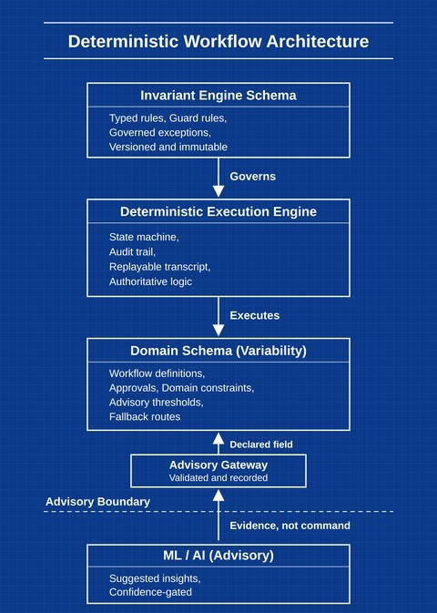

Hope — Inventor
Deterministic Workflow Architecture

style="max-width:420px; width:100%; height:auto;">
Invention Summary
A deterministic substrate: a governed execution layer for regulated workflows, where execution follows rules and every step can be verified.
- Deterministic Engine — Execution follows rule‑bound transitions rather than heuristics.
- Schema Contract — Variability lives in domain schemas; the engine's rules stay fixed.
- Replayable Audit — Every transition is recorded so it can be replayed and verified.
- Exception Governance — Exceptions are first‑class states with governed transitions.
- ML Boundary — AI is advisory; deterministic logic stays authoritative.
- Scope — A foundation for regulated workflows across healthcare, manufacturing, government, infrastructure and finance.